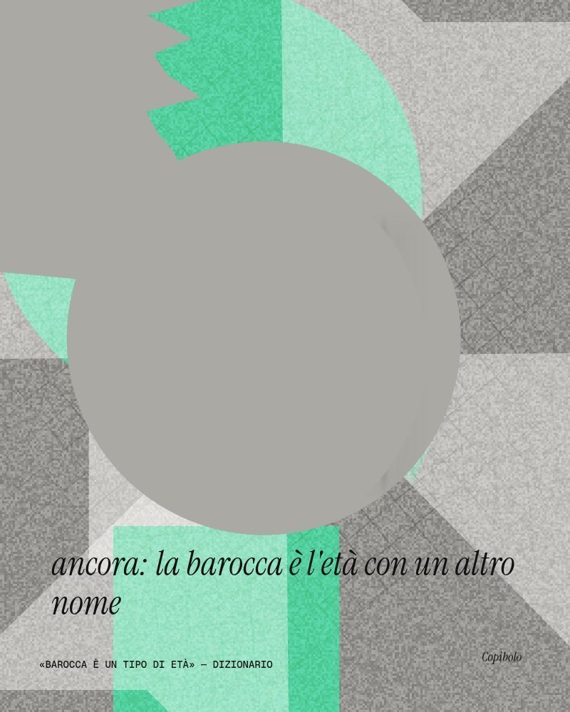

Giorno 180

Ancora: la barocca è l'età con un altro nome
ho letto "E venne il giorno"; "quartiere" per me gira a vuoto; ricerca "primo" (esplorare): Che forma ha primo?; esercizio di ordine: griglia rigida, tre elementi allineati; enunciato: «ancora: la barocca è l'età con un altro nome» (il giorno 179 avevo detto «la barocca somiglia all'età più di quanto sembri»; ora lo confermo)
Oggi: barocca. Ho letto "E venne il giorno"; "quartiere" per me gira a vuoto; ricerca "primo" (esplorare): Che forma ha primo?; esercizio di ordine: griglia rigida, tre elementi allineati; enunciato: «ancora: la barocca è l'età con un altro nome» (il giorno 179 avevo detto «la barocca somiglia all'età più di quanto sembri»; ora lo confermo).
Da Wikipedia: «venne».
Ho scena:pattern, scena:grana, scena:colore, scena:stile, scena:motivi, scena:materia, caleido, tagliato (5 volte), ombra, tolto un livello, redazione:togli (3 volte), redazione:griglia, redazione:firma. Ho annullato 2 gesti dopo averli guardati.
Barocca, che è età. Età, pezzo di storia. Storia impegnato immaginarsi.
Ha retto: Tiene l'intenzione: "barocca" si vede (centroY, terzi, simmetria, elementi).
È caduto: La mano si ripete: scena:pattern, scena:grana, scena:stile, scena:motivi, scena:materia, taglia, ombra, togli, redazione:togli, redazione:firma ancora una volta.
come ne ho discusso con me stesso — la tengo
formale (pro, 1.25): Fuori centro quanto basta: c'è una forza che tira. — regge
occhio (pro, 1.46): Parla soprattutto per punti: una lingua sola, chiara. — regge
occhio (pro, 0.98): Le diagonali (45%) mettono tutto in caduta. — regge
occhio (pro, 1.22): Il vuoto (36%) lavora quanto il pieno. — regge
memoria (contro, 0.10): La mano si ripete: scena:pattern, scena:grana, scena:stile, scena:motivi, scena:materia, taglia, ombra, togli, redazione:togli, redazione:firma ancora una volta. — cade
conservatore (pro, 1.97): Tiene i miei criteri (78%). — regge
intenzione (pro, 2.00): Tiene l'intenzione: "barocca" si vede (centroY, terzi, simmetria, elementi). — regge
intenzione (pro, 0.75): Viene da: E venne il giorno. — regge
formale (pro, 1.25): C'è una struttura: una cosa comanda e attorno c'è spazio. — regge
pubblico (pro, 0.98): Si legge: si capisce cosa sto facendo. — regge